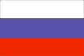
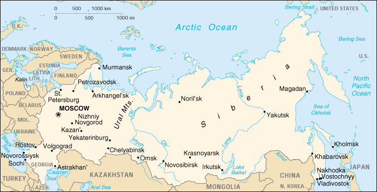

{kind=link}


| Russia |  |
|
|  | |
| Introduction |
Background: The defeat of the Russian Empire in World War I led to the seizure of power by the communists and the formation of the USSR. The brutal rule of Josef STALIN (1924-53) strengthened Russian dominance of the Soviet Union at a cost of tens of millions of lives. The Soviet economy and society stagnated in the following decades until General Secretary Mikhail GORBACHEV (1985-91) introduced glasnost (openness) and perestroika (restructuring) in an attempt to modernize communism, but his initiatives inadvertently released forces that by December 1991 broke up the USSR into 15 independent republics. Since then, Russia has struggled in its efforts to build a democratic political system and market economy to replace the strict social, political, and economic controls of the communist period.
| Geography |
Location: Northern Asia (that part west of the Urals is sometimes included with Europe), bordering the Arctic Ocean, between Europe and the North Pacific Ocean
Geographic coordinates: 60 00 N, 100 00 E
Map references: Asia
Area:
total:
17,075,200 sq km
land:
16,995,800 sq km
water:
79,400 sq km
Area - comparative: slightly less than 1.8 times the size of the US
Land boundaries:
total:
19,917 km
border countries:
Azerbaijan 284 km, Belarus 959 km, China (southeast) 3,605 km, China (south) 40 km, Estonia 294 km, Finland 1,313 km, Georgia 723 km, Kazakhstan 6,846 km, North Korea 19 km, Latvia 217 km, Lithuania (Kaliningrad Oblast) 227 km, Mongolia 3,441 km, Norway 167 km, Poland (Kaliningrad Oblast) 206 km, Ukraine 1,576 km
Coastline: 37,653 km
Maritime claims:
continental shelf:
200-m depth or to the depth of exploitation
exclusive economic zone:
200 nm
territorial sea:
12 nm
Climate: ranges from steppes in the south through humid continental in much of European Russia; subarctic in Siberia to tundra climate in the polar north; winters vary from cool along Black Sea coast to frigid in Siberia; summers vary from warm in the steppes to cool along Arctic coast
Terrain: broad plain with low hills west of Urals; vast coniferous forest and tundra in Siberia; uplands and mountains along southern border regions
Elevation extremes:
lowest point:
Caspian Sea -28 m
highest point:
Gora El'brus 5,633 m
Natural resources:
wide natural resource base including major deposits of oil, natural gas, coal, and many strategic minerals, timber
note:
formidable obstacles of climate, terrain, and distance hinder exploitation of natural resources
Land use:
arable land:
8%
permanent crops:
0%
permanent pastures:
4%
forests and woodland:
46%
other:
42% (1993 est.)
Irrigated land: 40,000 sq km (1993 est.)
Natural hazards: permafrost over much of Siberia is a major impediment to development; volcanic activity in the Kuril Islands; volcanoes and earthquakes on the Kamchatka Peninsula
Environment - current issues: air pollution from heavy industry, emissions of coal-fired electric plants, and transportation in major cities; industrial, municipal, and agricultural pollution of inland waterways and sea coasts; deforestation; soil erosion; soil contamination from improper application of agricultural chemicals; scattered areas of sometimes intense radioactive contamination; ground water contamination from toxic waste
Environment - international agreements:
party to:
Air Pollution, Air Pollution-Nitrogen Oxides, Air Pollution-Sulphur 85, Antarctic-Environmental Protocol, Antarctic Treaty, Biodiversity, Climate Change, Endangered Species, Environmental Modification, Hazardous Wastes, Law of the Sea, Marine Dumping, Nuclear Test Ban, Ozone Layer Protection, Ship Pollution, Tropical Timber 83, Wetlands, Whaling
signed, but not ratified:
Air Pollution-Sulphur 94, Climate Change-Kyoto Protocol
Geography - note: largest country in the world in terms of area but unfavorably located in relation to major sea lanes of the world; despite its size, much of the country lacks proper soils and climates (either too cold or too dry) for agriculture
| People |
Population: 146,001,176 (July 2000 est.)
Age structure:
0-14 years:
18% (male 13,493,610; female 12,971,546)
15-64 years:
69% (male 48,983,755; female 52,140,022)
65 years and over:
13% (male 5,802,129; female 12,610,114) (2000 est.)
Population growth rate: -0.38% (2000 est.)
Birth rate: 9.02 births/1,000 population (2000 est.)
Death rate: 13.8 deaths/1,000 population (2000 est.)
Net migration rate: 1.02 migrant(s)/1,000 population (2000 est.)
Sex ratio:
at birth:
1.05 male(s)/female
under 15 years:
1.04 male(s)/female
15-64 years:
0.94 male(s)/female
65 years and over:
0.46 male(s)/female
total population:
0.88 male(s)/female (2000 est.)
Infant mortality rate: 20.33 deaths/1,000 live births (2000 est.)
Life expectancy at birth:
total population:
67.19 years
male:
61.95 years
female:
72.69 years (2000 est.)
Total fertility rate: 1.25 children born/woman (2000 est.)
Nationality:
noun:
Russian(s)
adjective:
Russian
Ethnic groups: Russian 81.5%, Tatar 3.8%, Ukrainian 3%, Chuvash 1.2%, Bashkir 0.9%, Byelorussian 0.8%, Moldavian 0.7%, other 8.1%
Religions: Russian Orthodox, Muslim, other
Languages: Russian, other
Literacy:
definition:
age 15 and over can read and write
total population:
98%
male:
100%
female:
97% (1989 est.)
| Government |
Country name:
conventional long form:
Russian Federation
conventional short form:
Russia
local long form:
Rossiyskaya Federatsiya
local short form:
Rossiya
former:
Russian Soviet Federative Socialist Republic
Data code: RS
Government type: federation
Capital: Moscow
Administrative divisions:
49 oblasts (oblastey, singular - oblast), 21 republics* (respublik, singular - respublika), 10 autonomous okrugs**(avtonomnykh okrugov, singular - avtonomnyy okrug), 6 krays*** (krayev, singular - kray), 2 federal cities (singular - gorod)****, and 1 autonomous oblast*****(avtonomnaya oblast'); Adygeya (Maykop)*, Aginskiy Buryatskiy (Aginskoye)**, Altay (Gorno-Altaysk)*, Altayskiy (Barnaul)***, Amurskaya (Blagoveshchensk), Arkhangel'skaya, Astrakhanskaya, Bashkortostan (Ufa)*, Belgorodskaya, Bryanskaya, Buryatiya (Ulan-Ude)*, Chechnya (Groznyy)*, Chelyabinskaya, Chitinskaya, Chukotskiy (Anadyr')**, Chuvashiya (Cheboksary)*, Dagestan (Makhachkala)*, Evenkiyskiy (Tura)**, Ingushetiya (Nazran')*, Irkutskaya, Ivanovskaya, Kabardino-Balkariya (Nal'chik)*, Kaliningradskaya, Kalmykiya (Elista)*, Kaluzhskaya, Kamchatskaya (Petropavlovsk-Kamchatskiy), Karachayevo-Cherkesiya (Cherkessk)*, Kareliya (Petrozavodsk)*, Kemerovskaya, Khabarovskiy***, Khakasiya (Abakan)*, Khanty-Mansiyskiy (Khanty-Mansiysk)**, Kirovskaya, Komi (Syktyvkar)*, Koryakskiy (Palana)**, Kostromskaya, Krasnodarskiy***, Krasnoyarskiy***, Kurganskaya, Kurskaya, Leningradskaya, Lipetskaya, Magadanskaya, Mariy-El (Yoshkar-Ola)*, Mordoviya (Saransk)*, Moskovskaya, Moskva (Moscow)****, Murmanskaya, Nenetskiy (Nar'yan-Mar)**, Nizhegorodskaya, Novgorodskaya, Novosibirskaya, Omskaya, Orenburgskaya, Orlovskaya (Orel), Penzenskaya, Permskaya, Komi-Permyatskiy (Kudymkar)**, Primorskiy (Vladivostok)***, Pskovskaya, Rostovskaya, Ryazanskaya, Sakha (Yakutsk)*, Sakhalinskaya (Yuzhno-Sakhalinsk), Samarskaya, Sankt-Peterburg (Saint Petersburg)****, Saratovskaya, Severnaya Osetiya-Alaniya (Vladikavkaz)*, Smolenskaya, Stavropol'skiy***, Sverdlovskaya (Yekaterinburg), Tambovskaya, Tatarstan (Kazan')*, Taymyrskiy (Dudinka)**, Tomskaya, Tul'skaya, Tverskaya, Tyumenskaya, Tyva (Kyzyl)*, Udmurtiya (Izhevsk)*, Ul'yanovskaya, Ust'-Ordynskiy Buryatskiy (Ust'-Ordynskiy)**, Vladimirskaya, Volgogradskaya, Vologodskaya, Voronezhskaya, Yamalo-Nenetskiy (Salekhard)**, Yaroslavskaya, Yevreyskaya*****; note - when using a place name with an adjectival ending 'skaya' or 'skiy,' the word Oblast' or Avonomnyy Okrug or Kray should be added to the place name
note:
the autonomous republics of Chechnya and Ingushetiya were formerly the autonomous republic of Checheno-Ingushetia (the boundary between Chechnya and Ingushetia has yet to be determined); administrative divisions have the same names as their administrative centers (exceptions have the administrative center name following in parentheses)
Independence: 24 August 1991 (from Soviet Union)
National holiday: Independence Day, 12 June (1990)
Constitution: adopted 12 December 1993
Legal system: based on civil law system; judicial review of legislative acts
Suffrage: 18 years of age; universal
Executive branch:
chief of state:
President Vladimir Vladimirovich PUTIN (since 7 May 2000); note - President YEL'TSIN resigned on 31 December 1999, naming Vladimir PUTIN as Acting President until new elections were held on 26 March 2000
head of government:
Acting Premier Mikhail Mikhaylovich KASYANOV (since 7 May 2000); Deputy Premiers Viktor Borisovich KHRISTENKO (since 31 May 1999), Ilya Iosifovich KLEBANOV (since 31 May 1999), Nikolay Pavlovich KOSHMAN (since 15 October 1999), Valentina Ivanovna MATVIYENKO (since 22 September 1998), Valdimir Nikolayevich SHCHERBAK (since 25 May 1999), Sergey Kuzhugetovich SHOYGU (since 10 January 2000)
cabinet:
Ministries of the Government or "Government" composed of the premier and his deputies, ministers, and other agency heads; all are appointed by the president
note:
there is also a Presidential Administration (PA) that provides staff and policy support to the president, drafts presidential decrees, and coordinates policy among government agencies; a Security Council also reports directly to the president
elections:
president elected by popular vote for a four-year term; election last held 26 March 2000 (next to be held NA 2004); note - no vice president; if the president dies in office, cannot exercise his powers because of ill health, is impeached, or resigns, the premier succeeds him; the premier serves as acting president until a new presidential election is held, which must be within three months; premier appointed by the president with the approval of the Duma
election results:
Vladimir Vladimirovich PUTIN elected president; percent of vote - PUTIN 52.9%, Gennadiy Aadreyevich ZYUGANOV 29.2%, Grigoriy Alekseyevich YAVLINSKIY 5.8%
Legislative branch:
bicameral Federal Assembly or Federalnoye Sobraniye consists of the Federation Council or Sovet Federatsii (178 seats, filled ex officio by the top executive and legislative officials in each of the 89 federal administrative units - oblasts, krays, republics, autonomous okrugs and oblasts, and the federal cities of Moscow and Saint Petersburg; members serve four-year terms) and the State Duma or Gosudarstvennaya Duma (450 seats, half elected by proportional representation from party lists winning at least 5% of the vote, and half from single-member constituencies; members are elected by direct popular vote to serve four-year terms)
elections:
State Duma - last held 19 December 1999 (next to be held NA December 2003)
election results:
State Duma - percent of vote received by parties clearing the 5% threshold entitling them to a proportional share of the 225 party list seats - Communist Party of the Russian Federation (KPRF) 24.29%, Unity 23.32%, Fatherland-All Russia (OVR) 13.33%, Union of Right Forces 8.52%, Liberal Democratic Party (Zhirinovsky Bloc) 5.98%, Yabloko 5.93%; seats by party - Communist Party of the Russian Federation (KPRF) 90, Unity 82, People's Deputies faction 57, Fatherland-All Russia (OVR) 45, Russia's Regions 42, Agro-industrial faction 39, Union of Right Forces 32, Yabloko 21, Liberal Democratic Party of Russia 17, independents 16, repeat election required 8, vacant 1
Judicial branch: Constitutional Court, judges are appointed for life by the Federation Council on the recommendation of the president; Supreme Court, judges are appointed for life by the Federation Council on the recommendation of the president; Superior Court of Arbitration, judges are appointed for life by the Federation Council on the recommendation of the president
Political parties and leaders:
Agro-industrial faction [leader NA]; Communist Party of the Russian Federation or KPRF [Gennadiy Andreyevich ZYUGANOV]; Fatherland-All Russia or OVR [Yevgeniy Maksimovich PRIMAKOV, Yuriy Mikhailovich LUZHKOV]; Liberal Democratic Party of Russia [Vladimir Volfovich ZHIRINOVSKIY]; People's Deputies faction [leader NA]; Russia's Regions [leader NA]; Union of Right Forces [Sergey Vladilenovich KIRIYENKO]; Unity [Sergey Kuzhugetovich SHOYGU]; Yabloko Bloc [Grigoriy Alekseyevich YAVLINSKIY]
note:
some 150 political parties, blocs, and movements registered with the Justice Ministry as of the 19 December 1998 deadline to be eligible to participate in the 19 December 1999 Duma elections; of these, 36 political organizations actually qualified to run slates of candidates on the Duma party list ballot, 6 parties cleared the 5% threshold to win a proportional share of the 225 party seats in the Duma, 8 other organizations hold seats in the Duma: Bloc of Nikolayev and Academician Fedorov, Congress of Russian Communities, Movement in Support of the Army, Our Home Is Russia, Party of Pensioners, Russian All-People's Union, Russian Socialist Party, and Spiritual Heritage; primary political blocs include pro-market democrats - (Yabloko Bloc and Union of Right Forces), anti-market and/or ultranationalist (Communist Party of the Russian Federation and Liberal Democratic Party of Russia)
Political pressure groups and leaders: NA
International organization participation: APEC, BIS, BSEC, CBSS, CCC, CE, CERN (observer), CIS, EAPC, EBRD, ECE, ESCAP, G- 8, IAEA, IBRD, ICAO, ICRM, IDA, IFC, IFRCS, IHO, ILO, IMF, IMO, Inmarsat, Intelsat, Interpol, IOC, IOM (observer), ISO, ITU, LAIA (observer), MINURSO, MONUC, NAM (guest), NSG, OAS (observer), OPCW, OSCE, PCA, PFP, UN, UN Security Council, UNAMSIL, UNCTAD, UNESCO, UNHCR, UNIDO, UNIKOM, UNITAR, UNMIBH, UNMIK, UNMOP, UNOMIG, UNTAET, UNTSO, UPU, WFTU, WHO, WIPO, WMO, WToO, WTrO (applicant), ZC
Diplomatic representation in the US:
chief of mission:
Ambassador Yuriy Viktorovich USHAKOV
chancery:
2650 Wisconsin Avenue NW, Washington, DC 20007
telephone:
[1] (202) 298-5700 through 5704
FAX:
[1] (202) 298-5735
consulate(s) general:
New York, San Francisco, and Seattle
Diplomatic representation from the US:
chief of mission:
Ambassador James F. COLLINS
embassy:
Novinskiy Bul'var 19/23, Moscow
mailing address:
APO AE 09721
telephone:
[7] (095) 252-24-51 through 59
FAX:
[7] (095) 956-42-61
consulate(s) general:
St. Petersburg, Vladivostok, Yekaterinburg
Flag description: three equal horizontal bands of white (top), blue, and red
| Economy |
Economy - overview: Nine years after the collapse of the USSR, Russia is still struggling to establish a modern market economy and achieve strong economic growth. Russian GDP has contracted an estimated 45% since 1991, despite the country's wealth of natural resources, its well-educated population, and its diverse - although increasingly dilapidated - industrial base. By the end of 1997, Russia had achieved some progress. Inflation had been brought under control, the ruble was stabilized, and an ambitious privatization program had transferred thousands of enterprises to private ownership. Some important market-oriented laws had also been passed, including a commercial code governing business relations and the establishment of an arbitration court for resolving economic disputes. But in 1998, the Asian financial crisis swept through the country, contributing to a sharp decline in Russia's earnings from oil exports and resulting in an exodus of foreign investors. Matters came to a head in August 1998 when the government allowed the ruble to fall precipitously and stopped payment on $40 billion in ruble bonds. In 1999, output increased for only the second time since 1991, by an officially estimated 3.2%, regaining much of the 4.6% drop of 1998. This increase was achieved despite a year of potential turmoil that included the tenure of three premiers and culminated in the New Year's Eve resignation of President YELTSIN. Of great help was the tripling of international oil prices in the second half of 1999, raising the export surplus to $29 billion. On the negative side, inflation rose to an average 86% in 1999, compared with a 28% average in 1998 and a hoped-for 30% average in 2000. Ordinary persons found their wages falling by roughly 30% and their pensions by 45%. The PUTIN government has given high priority to supplementing low incomes by paying down wage and pension arrears. Many investors, both domestic and international remain on the sidelines, scared off by Russia's long-standing problems with capital flight, reliance on barter transactions, widespread corruption among officials, and endemic organized crime.
GDP: purchasing power parity - $620.3 billion (1999 est.)
GDP - real growth rate: 3.2% (1999 est.)
GDP - per capita: purchasing power parity - $4,200 (1999 est.)
GDP - composition by sector:
agriculture:
8.4%
industry:
38.5%
services:
53.1% (1999 est.)
Population below poverty line: 40% (1999 est.)
Household income or consumption by percentage share:
lowest 10%:
3%
highest 10%:
22.2% (1993)
Inflation rate (consumer prices): 86% (1999 est.)
Labor force: 66 million (1997)
Labor force - by occupation: agriculture 15%, industry 30%, services 55% (1999 est.)
Unemployment rate: 12.4% (1999 est.), plus considerable underemployment
Budget:
revenues:
$24.08 billion
expenditures:
$26.82 billion, including capital expenditures of $NA (1999 est.)
Industries: complete range of mining and extractive industries producing coal, oil, gas, chemicals, and metals; all forms of machine building from rolling mills to high-performance aircraft and space vehicles; shipbuilding; road and rail transportation equipment; communications equipment; agricultural machinery, tractors, and construction equipment; electric power generating and transmitting equipment; medical and scientific instruments; consumer durables, textiles, foodstuffs, handicrafts
Industrial production growth rate: 8.1% (1999 est.)
Electricity - production: 771.947 billion kWh (1998)
Electricity - production by source:
fossil fuel:
67.77%
hydro:
19.49%
nuclear:
12.74%
other:
0% (1998)
Electricity - consumption: 702.711 billion kWh (1998)
Electricity - exports: 21 billion kWh (1998)
Electricity - imports: 5.8 billion kWh (1998)
Agriculture - products: grain, sugar beets, sunflower seed, vegetables, fruits; beef, milk
Exports: $75.4 billion (1999 est.)
Exports - commodities: petroleum and petroleum products, natural gas, wood and wood products, metals, chemicals, and a wide variety of civilian and military manufactures
Exports - partners: Ukraine, Germany, US, Belarus, Netherlands, China
Imports: $48.2 billion (1999 est.)
Imports - commodities: machinery and equipment, consumer goods, medicines, meat, grain, sugar, semifinished metal products
Imports - partners: Germany, Belarus, Ukraine, US, Kazakhstan, Italy
Debt - external: $166 billion (yearend 1999)
Economic aid - recipient: $8.523 billion (1995)
Currency: 1 ruble (R) = 100 kopeks
Exchange rates:
rubles per US$1 - 26.7996 (December 1999), 24.6199 (1999), 9.7051 (1998), 5,785 (1997), 5,121 (1996), 4,559 (1995)
note:
the post-1 January 1998 ruble is equal to 1,000 of the pre-1 January 1998 rubles
Fiscal year: calendar year
| Communications |
Telephones - main lines in use: 25.019 million (1995)
Telephones - mobile cellular: 645,000 (1999)
Telephone system:
the telephone system has undergone significant changes in the 1990s; there are more than 1,000 companies licensed to offer communication services; access to digital lines has improved, particularly in urban centers; Internet and e-mail services are improving; Russia has made progress toward building the telecommunications infrastructure necessary for a market economy
domestic:
cross-country digital trunk lines run from Saint Petersburg to Khabarovsk, and from Moscow to Novorossiysk; the telephone systems in 60 regional capitals have modern digital infrastructures; cellular services, both analog and digital, are available in many areas; in rural areas, the telephone services are still outdated, inadequate, and low density
international:
Russia is connected internationally by three undersea fiber-optic cables; digital switches in several cities provide more than 50,000 lines for international calls; satellite earth stations provide access to Intelsat, Intersputnik, Eutelsat, Inmarsat, and Orbita
Radio broadcast stations: AM 420, FM 447, shortwave 56 (1998)
Radios: 61.5 million (1997)
Television broadcast stations: 7,349 (1996)
Televisions: 60.5 million (1997)
Internet Service Providers (ISPs): 83 (Russia and Kazakhstan) (1999)
| Transportation |
Railways:
total:
150,000 km; note - 87,000 km in common carrier service; 63,000 km serve specific industries and are not available for common carrier use
broad gauge:
150,000 km 1.520-m gauge (January 1997 est.)
Highways:
total:
948,000 km (including 416,000 km which serve specific industries or farms and are not maintained by governmental highway maintenance departments)
paved:
336,000 km
unpaved:
612,000 km (including 411,000 km of graveled or some other form of surfacing and 201,000 km of unstabilized earth) (1995 est.)
Waterways: total navigable routes in general use 101,000 km; routes with navigation guides serving the Russian River Fleet 95,900 km; routes with night navigational aids 60,400 km; man-made navigable routes 16,900 km (January 1994 est.)
Pipelines: crude oil 48,000 km; petroleum products 15,000 km; natural gas 140,000 km (June 1993 est.)
Ports and harbors: Arkhangel'sk, Astrakhan', Kaliningrad, Kazan', Khabarovsk, Kholmsk, Krasnoyarsk, Moscow, Murmansk, Nakhodka, Nevel'sk, Novorossiysk, Petropavlovsk-Kamchatskiy, St. Petersburg, Rostov, Sochi, Tuapse, Vladivostok, Volgograd, Vostochnyy, Vyborg
Merchant marine:
total:
695 ships (1,000 GRT or over) totaling 3,920,923 GRT/4,867,676 DWT
ships by type:
barge carrier 1, bulk 19, cargo 379, chemical tanker 4, combination bulk 21, combination ore/oil 3, container 25, multi-functional large load carrier 1, passenger 35, passenger/cargo 3, petroleum tanker 149, refrigerated cargo 26, roll-on/roll-off 22, short-sea passenger 7 (1999 est.)
Airports: 2,517 (1994 est.)
Airports - with paved runways:
total:
630
over 3,047 m:
54
2,438 to 3,047 m:
202
1,524 to 2,437 m:
108
914 to 1,523 m:
115
under 914 m:
151 (1994 est.)
Airports - with unpaved runways:
total:
1,887
over 3,047 m:
25
2,438 to 3,047 m:
45
1,524 to 2,437 m:
134
914 to 1,523 m:
291
under 914 m:
1,392 (1994 est.)
| Military |
Military branches: Ground Forces, Navy, Air Force, Strategic Rocket Forces
Military manpower - military age: 18 years of age
Military manpower - availability:
males age 15-49:
38,825,113 (2000 est.)
Military manpower - fit for military service:
males age 15-49:
30,294,374 (2000 est.)
Military manpower - reaching military age annually:
males:
1,195,916 (2000 est.)
Military expenditures - dollar figure: $NA
Military expenditures - percent of GDP: NA%
| Transnational Issues |
Disputes - international: dispute over at least two small sections of the boundary with China remain to be settled, despite 1997 boundary agreement; islands of Etorofu, Kunashiri, and Shikotan and the Habomai group occupied by the Soviet Union in 1945, now administered by Russia, claimed by Japan; Caspian Sea boundaries are not yet determined among Azerbaijan, Iran, Kazakhstan, Russia, and Turkmenistan; Estonian and Russian negotiators reached a technical border agreement in December 1996 which has not been ratified; draft treaty delimiting the boundary with Latvia has not been signed; has made no territorial claim in Antarctica (but has reserved the right to do so) and does not recognize the claims of any other nation; 1997 border agreement with Lithuania not yet ratified
Illicit drugs: limited cultivation of illicit cannabis and opium poppy and producer of amphetamines, mostly for domestic consumption; government has active eradication program; increasingly used as transshipment point for Southwest and Southeast Asian opiates and cannabis and Latin American cocaine to Western Europe, possibly to the US, and growing domestic market; major source of heroin precursor chemicals